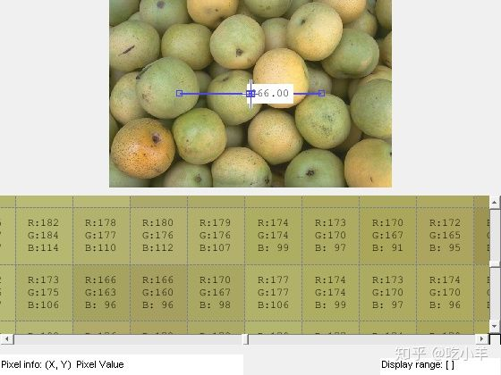

Home
本示例说明了如何创建一个简单的应用程序，该应用程序使用模块化像素信息工具提供有关图像中像素和特征的信息。
首先，定义一个构建应用程序的函数。本示例使用名为的函数my_pixinfo_tool，该函数 附加在本示例末尾。
在定义了构建应用程序的功能之后，请测试该应用程序。将图像读入工作区。
I = imread('pears.png');
使用应用程序中的像素信息工具显示图像。
my_pixinfo_tool(I)

应用创建函数
my_pixinfo_tool函数接受图像作为参数，并使用像素信息工具，显示范围工具，距离工具和像素区域工具在图形窗口中显示图像。请注意，该功能会抑制图形窗口中的工具栏和菜单栏，因为可滚动导航与标准的MATLAB™图形窗口导航工具不兼容。
function my_pixinfo_tool(im)
% Create figure, setting up properties
fig = figure('Toolbar','none', ...
'Menubar','none', ...
'Name','My Pixel Info Tool', ...
'NumberTitle','off', ...
'IntegerHandle','off');
% Create axes and reposition the axes
% to accommodate the Pixel Region tool panel
ax = axes('Units','normalized', ...
'Position',[0 .5 1 .5]);
% Display image in the axes
img = imshow(im);
% Add Distance tool, specifying axes as parent
distool = imdistline(ax);
% Add Pixel Information tool, specifying image as parent
pixinfo = impixelinfo(img);
% Add Display Range tool, specifying image as parent
drange = imdisplayrange(img);
% Add Pixel Region tool panel, specifying figure as parent
% and image as target
pixreg = impixelregionpanel(fig,img);
% Reposition the Pixel Region tool to fit in the figure
% window, leaving room for the Pixel Information and
% Display Range tools
set(pixreg, 'units','normalized','position',[0 .08 1 .4])
end
======================================================================
我的测试结果及程序
下面是我测试的代码：

注：本文根据MATLAB官网内容修改而成。